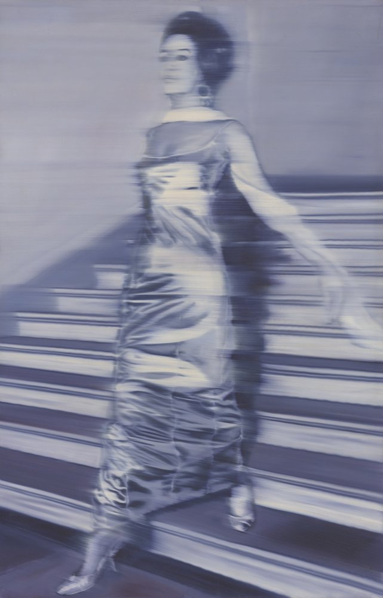

Woman Descending the Staircase (Frau die Treppe herabgehend)
Gerhard Richter · 1965 · Oil on canvas · 198 × 128 cm · Art Institute of Chicago
In copyright. Look and learn: shown for study, not for download.
This is one of Richter's photo paintings: he transferred a found photograph onto canvas and then dragged a dry brush through the wet paint to blur the image. The woman is unknown. He was thirty-two or thirty-three. He sold the canvas to Johannes Wasmuth of Rolandseck, it was shown in Rome and Zurich in 1966, and the Lannan Foundation gave it to the Art Institute of Chicago in 1997.